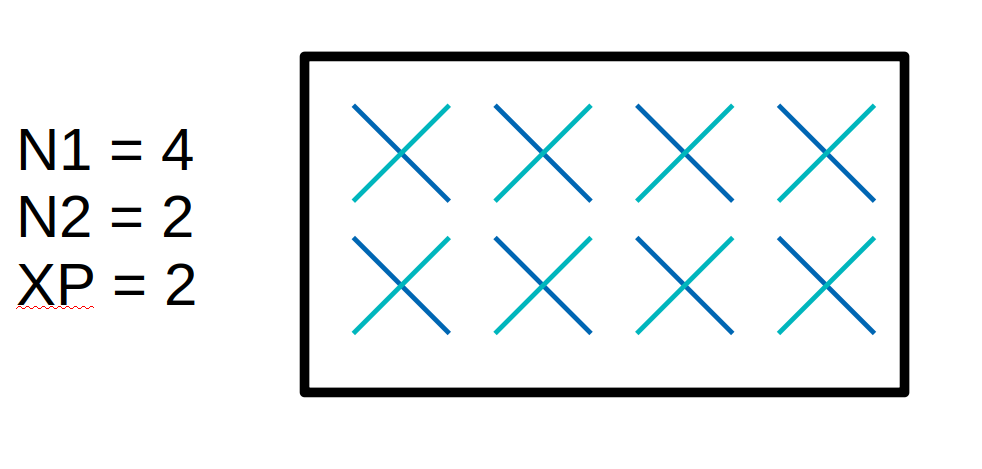

Running the OAI 5G gNB (nr-softmodem)¶
This document is a general overview of running nr-softmodem, the OAI 5G
gNodeB executable. For build instructions see BUILD.md. For UE
documentation see runmodem-nrue.md.
Modes of operation¶
nr-softmodem supports several deployment modes. The default is "standalone"
mode.
| Option | Mode | Description |
|---|---|---|
| none | standalone | Run gNB in SA mode (no flag). |
--nsa |
NSA | Non-standalone mode, requires an LTE eNB, see NSA documentation. |
| phy-test | --phy-test |
Test modes without random access, see nrUE page. |
| do-ra | --do-ra |
Test mode without a core network or RRC connection, see nrUE page. |
| noS1 | --noS1 |
Manually inject traffic, suitable for phy-test/do-ra without core network. |
Basic invocation¶
From the build directory (with build_oai, by default cmake_targets/ran_build/build/):
sudo ./nr-softmodem -O <config_file> [options]
Example with a USRP B210:
sudo ./nr-softmodem -O ../../../targets/PROJECTS/GENERIC-NR-5GC/CONF/gnb.sa.band78.fr1.106PRB.usrpb210.conf -E --continuous-tx
CI-tested sample configuration files are in ci-scripts/conf_files/. Sample
configuration files for various hardware can be found under
targets/PROJECTS/GENERIC-NR-5GC/CONF/.
Configuration file¶
The configuration file can use either libconfig (.conf) or YAML (.yaml)
syntax, based on the file ending. The main sections are:
gNBs: cell identity, PLMN, physical cell parameters, AMF addressMACRLCs: MAC/RLC layer settingsL1s: L1 layer settings and thread pinningRUs: radio unit configuration (device selection, antennas, gains)security: ciphering and integrity algorithm preferenceslog_config: per-module log levels
Individual parameters can be overridden on the command line using the
--Section.[index].param value syntax, e.g.
--gNBs.[0].min_rxtxtime 6.
Core network connectivity¶
In the gNBs section, set the following to connect to a 5G core (AMF):
gNBs = (
{
tracking_area_code = 1;
plmn_list = ({ mcc = 001; mnc = 01; mnc_length = 2; snssaiList = ({ sst = 1; sd = 0xffffff; }) });
nr_cellid = 12345678L;
amf_ip_address = ({ ipv4 = "192.168.70.132"; });
NETWORK_INTERFACES :
{
GNB_IPV4_ADDRESS_FOR_NG_AMF = "192.168.70.129"; // N2 interface
GNB_IPV4_ADDRESS_FOR_NGU = "192.168.70.129"; // N3 interface
GNB_PORT_FOR_NGU = 2152;
};
});
plmn_listmust match the PLMN configured in the AMF.amf_ip_addressis the IP address of the AMF.GNB_IPV4_ADDRESS_FOR_NG_AMFis the local IP address of the gNB's N2 interface.GNB_IPV4_ADDRESS_FOR_NGUis the local IP address of the gNB's N3 interface.
MAC configuration¶
In the MACRLCs section, configure MAC parameters. See the MAC user
documentation for more information.
L1 configuration¶
The L1s section configures the L1 (physical layer) processing pipeline.
tr_n_preference: transport to the MAC layer. Normallylocal_mac(shared memory). Set tonfapifor a networked L1/MAC split; see nFAPI docs.prach_dtx_threshold: energy threshold (in dB x10) for PRACH preamble detection. Lower values increase sensitivity but may cause false detections. Typical range: 60–200.pucch0_dtx_threshold: energy threshold for PUCCH format 0 (SR/HARQ-ACK) detection. Similar trade-off asprach_dtx_threshold. Typical range: 10–100.pusch_dtx_threshold: energy threshold for PUSCH detection. Similar trade-off asprach_dtx_threshold. Typical range: 10–100.ofdm_offset_divisor: controls a small timing advance applied to the OFDM signal to ensure samples arrive before the processing deadline. Set toUINT_MAX(i.e.,4294967295) for zero offset; a value of8gives an offset offrame_length / 8. The default value of8works well in most cases.max_ldpc_iterations: maximum number of LDPC decoder iterations. Fewer iterations reduce CPU load at the cost of UL error rate. Default is 8, but might be as high as 20 or more..L1_rx_thread_core/L1_tx_thread_core: pin the L1 RX and TX threads to specific isolated CPU cores. Recommended for real-time performance, especially with O-RAN 7.2 fronthaul.phase_compensation(FHI 7.2 only): set to0if phase compensation is done in the O-RU,1if it should be done in the DU (software). Must match the O-RU configuration.tx_amp_backoff_dB(FHI 7.2 only): output amplitude backoff in dB relative to full scale. Must be set according to the O-RU vendor documentation to avoid exceeding the RU's power limits.
RU configuration¶
The RUs section describes the radio unit, i.e., either an integrated RF device
(split 8 radio) or a remote RU connected via a fronthaul interface (e.g., O-RU).
local_rf:"yes"for a locally attached RF device (USRP, etc.),"no"for a remote RU (e.g., O-RAN 7.2 fronthaul).nb_tx/nb_rx: number of TX and RX antenna ports. Must be consistent with the antenna port configuration ingNBs(see MIMO section).att_tx/att_rx: software attenuation applied to TX/RX samples in dB. Used to reduce signal levels in software before they reach the RF device.bands: list of NR band numbers this RU operates on, e.g.[78].max_pdschReferenceSignalPower: maximum PDSCH reference signal power in dBm. Used by the UE for path loss estimation. Should match the actual transmit power level.max_rxgain: maximum RX gain of the RF device in dB. This is the hardware gain limit; the actual gain used may be lower.clock_src: clock reference source."internal"uses the device's own oscillator;"external"expects an external 10 MHz reference;"gpsdo"uses a GPS-disciplined oscillator. Applicable only for USRP.sdr_addrs: device address string passed to the RF driver. Used notably with USRP and BladeRF devices.ru_thread_core: CPU core for the RU thread, split 8 only.
Frequency and cell configuration¶
Key parameters in servingCellConfigCommon:
absoluteFrequencySSB/dl_absoluteFrequencyPointA: DL frequency in NR-ARFCN for SSB and PointAdl_frequencyBand/ul_frequencyBand: NR band numberdl_carrierBandwidth/ul_carrierBandwidth: bandwidth in PRBsdl_subcarrierSpacing: subcarrier spacing (0=15 kHz, 1=30 kHz, 2=60 kHz, 3=120 kHz)ssPBCH_BlockPower: SSB transmit power in dBm (EPRE of SSB resource elements)prach_ConfigurationIndex,prach_msg1_FrequencyStart: PRACH configuration
For a reference of frequency parameters and band configurations see gNB frequency setup.
Security¶
The security section controls NAS/AS security algorithm selection:
security = {
# preferred ciphering algorithms
# the first one of the list that an UE supports in chosen
# valid values: nea0, nea1, nea2, nea3
ciphering_algorithms = ( "nea0" );
# preferred integrity algorithms
# the first one of the list that an UE supports in chosen
# valid values: nia0, nia1, nia2, nia3
integrity_algorithms = ( "nia2", "nia0" );
# setting 'drb_ciphering' to "no" disables ciphering for DRBs, no matter
# what 'ciphering_algorithms' configures; same thing for 'drb_integrity'
drb_ciphering = "yes";
drb_integrity = "no";
};
Common radio devices¶
RFsimulator¶
The RFsimulator replaces the radio device with a virtual radio, allowing
gNB and UE to run without hardware. Built by default. Ideal for testing,
debugging, and development. Add --rfsim to the command line.
See the RFsimulator documentation.
USRP (B2xx, N3xx, X3xx, x4xx)¶
Build with build_oai -w USRP/cmake -DOAI_USRP=ON. The device is selected
automatically. Common per-device recommendations:
- B210: use
-E --continuous-tx; limited to ~40 MHz bandwidth - N3xx/X3xx: use
--usrp-tx-thread-config 1; consider--tune-offsetorul_prbblacklistfor DC noise at high bandwidth
For network tuning of 10G USRP devices (N300, X300):
sudo ethtool -G <ifname> tx 4096 rx 4096
sudo sysctl -w net.core.wmem_max=62500000
sudo sysctl -w net.core.rmem_max=62500000
See also the COTS UE tutorial and performance tuning guide.
O-RAN 7.2 Fronthaul (FHI)¶
For O-RAN split 7.2 with an O-RU, build with build_oai -t
oran_fhlib_5g/cmake -DOAI_FHI72=ON. Configuration requires a fhi_72
section and DPDK setup. See the O-RAN FHI 7.2 tutorial.
Higher-layer splits¶
CU/DU (F1) and CU-CP/CU-UP (E1) splits¶
F1 splits the gNB into a CU (RRC/PDCP/SDAP) and one or more DUs (RLC/MAC/L1). See F1AP docs. The CU and DU connect via F1AP over SCTP. The DU configuration specifies the CU IP address.
To run a split gNB, start a CU and one or more DUs separately:
# CU
sudo ./nr-softmodem -O ../../../targets/PROJECTS/GENERIC-NR-5GC/CONF/cu_gnb.conf
# DU
sudo ./nr-softmodem -O ../../../targets/PROJECTS/GENERIC-NR-5GC/CONF/du_gnb.conf
E1 splits the CU into a CU-CP (RRC) and one or more CU-UPs (PDCP/SDAP) (and therefore also requires F1). See E1AP docs.
FAPI/nFAPI splits¶
FAPI splits the L1 and MAC. It is used internally by the monolithic gNB. It is possible to separate L1 and L2 into separate processes and use shared memory between both. It is further possible use networked FAPI (nFAPI) to separate L1 and L2 into separate processes on different hosts and use socket-based communication. See the FAPI/nFAPI documentation
5G gNB MIMO configuration¶
In order to enable DL-MIMO in OAI 5G softmodem, the prerequisite is to have do_CSIRS = 1 in the configuration file. This allows the gNB to schedule CSI reference signal and to acquire from the UE CSI measurements to be able to schedule DLSCH with MIMO.
The following step is to set the number of PDSCH logical antenna ports. These needs to be larger or equal to the maximum number of MIMO layers requested (for 2-layer MIMO it is necessary to have at least two logical antenna ports).

This image shows an example of gNB 5G MIMO logical antenna port configuration. It has to be noted that logical antenna ports might not directly correspond to physical antenna ports and each logical antenna port might consist of a sub-array of antennas.
In 5G the basic element is a dual-polarized antenna, therefore the minimal DL MIMO setup with two logical antenna ports would consist of two cross-polarized antenna elements. In a single panel configuration, as the one in the picture, this element can be repeated vertically and/or horizontally to form an equi-spaced 1D or 2D array. The values N1 and N2 represent the number of antenna ports in the two dimensions and the supported configurations are specified in Section 5.2.2.2.1 of TS 38.214.
The DL logical antenna port configuration can be selected through configuration file. pdsch_AntennaPorts_N1 can be used to set N1 parameter, pdsch_AntennaPorts_N2 to set N2 and pdsch_AntennaPorts_XP to set the cross-polarization configuration (1 for single pol, 2 for cross-pol). To be noted that if XP is 1 but N1 and/or N2 are larger than 1, this would result in a non-standard configuration and the PMI selected would be the identity matrix regardless of CSI report. The default value for each of these parameters is 1. The total number of PDSCH logical antenna ports is the multiplication of those 3 parameters.
Finally the number of TX physical antenna in the RU part of the configuration file, nb_tx, should be equal or larger than the total number of PDSCH logical antenna ports.
It is possible to limit the number supported DL MIMO layers via RRC configuration, e.g. to a value lower than the number of logical antenna ports configured, by using the configuration file parameter maxMIMO_layers.
Example of configuration file with parameters for 2-layer MIMO
IF (Intermediate Frequency) equipment¶
OAI supports RF front-ends operating on arbitrary frequencies outside standard
3GPP NR bands. Configure in the RUs section of the gNB config file:
if_freq: DL frequency in Hz (suffix withLin libconfig, e.g.2169080000L)if_offset: UL frequency offset in Hz
RedCap UEs¶
OAI supports connecting RedCap (5G Release 17 Reduced Capability) UEs. This
ability was tested with the Quectel RG255C-GL RedCap module with firmware
version RG255CGLABR01A04M4G.
RedCap support requires some modifications to the gNB configuration. For instance, this repository contains a reference configuration file for a SISO 40MHz numerology 1 gNB supporting RedCap UEs. To support both RedCap and other UEs, we configure an initial bandwidth part of 20MHz and an optional bandwidth part of 40MHz. Every UE first connects with the initial 20MHz bandwidth part. RedCap UEs remain using this initial bandwidth part while other UEs escalate to use the 40MHz bandwidth part.
Any gNB configuration file can be extended to support RedCap UEs:
1. Copy the first_active_bwp, bwp_list, RedCap and TIMERS sections from
the gNBs list of the reference configuration to the target configuration
file.
2. Modify the bwpSize in the bwp_list to match the bandwidth of the target
gNB. If necessary, in the same section, modify scs to match the numerology
of the target gNB.
3. Modify the initial bandwidth part location and bandwidth: set
initialDLBWPlocationAndBandwidth and initialULBWPlocationAndBandwidth to
13750 (or 13750 + RBstart to offset the initial bandwidth part, not tested).
4. Checkout the gNB frequency setup documentation and
follow the instructions with the online calculator to find the
absoluteFrequencySSB for the new initial bandwidth part. The chosen
absoluteFrequencySSB is the Arfcn GSCN encountered in the line where
CRBstart is equal to 0 (or to the RBstart offset you chose previously, not
tested).
For example, connecting RedCap UEs on a 4x4 100MHz numerology 1 gNB with a 7.2
split Radio Unit could be achieved by following this process. For gNBs with
total bandwidth of 20MHz or below, it is not necessary to modify the bandwidth
part configuration. Then, only copy the RedCap and TIMERS sections from
the reference configuration to the target configuration file.
2-Step Random Access¶
OAI supports the Rel-16 2-Step Random Access procedure (MsgA/MsgB) with the OAI UE only. It has not been tested with COTS UEs, since none we have support it. A cell runs either 2-Step or 4-Step RA, depending on its configuration; there is no fallback between the two.
To enable 2-Step RA in any gNB configuration file:
- Copy the 2-Step RA block from
gnb.sa.band78.106PRB.usrpb210.RA_2-Step.confinto theservingCellConfigCommonsection of the target configuration file. - Set
msgA_PUSCH_TimeDomainOffset_r16to a non-zero value. If it is set to0, the 2-Step RA configuration is discarded and the gNB runs 4-Step RA.
No additional option is needed on the UE side: nr-uesoftmodem uses 2-Step RA
when the cell advertises it.
Multi-cell configuration¶
One nr-softmodem instance can serve multiple cells. A sample two-cell
RFsimulator configuration is at:
targets/PROJECTS/GENERIC-NR-5GC/CONF/gnb.sa.band77.51prb.rfsim.2cells.yaml
Config file structure¶
Each cell is expressed as a separate gNBs[] entry, all sharing the same
gNB_ID and gNB_name. The following parameters are read only from the first
entry; the gNB will abort on startup if they appear in any subsequent entry:
gNBs[]:amf_ip_address,NETWORK_INTERFACES,SCTP,TIMERSMACRLCs[]N-side (MAC→RRC/PDCP):tr_n_preference,local_n_address,local_n_address_f1u,remote_n_address,local_n_portd,remote_n_portdMACRLCs[]S-side (MAC→L1):tr_s_preference,tr_s_shm_prefix,tr_s_poll_core,local_s_address,remote_s_address,local_s_portc,local_s_portd
There must be one MACRLCs[] entry per cell.
gNBs:
# Cell 0 — gNB-wide params (AMF, SCTP, TIMERS) live here
- gNB_ID: "0xe00"
gNB_name: gNB-OAI
tracking_area_code: 1
nr_cellid: "12345678"
amf_ip_address: [...]
NETWORK_INTERFACES: {...}
TIMERS: {...}
servingCellConfigCommon:
- physCellId: 0
absoluteFrequencySSB: 667200
dl_absoluteFrequencyPointA: 666672
...
# Cell 1 — per-cell params only; gNB-wide params must not appear here
- gNB_ID: "0xe00"
gNB_name: gNB-OAI
tracking_area_code: 2
nr_cellid: "11111111"
servingCellConfigCommon:
- physCellId: 1
absoluteFrequencySSB: 677376
dl_absoluteFrequencyPointA: 676848
...
MACRLCs:
- tr_s_preference: local_L1 # one entry per cell
tr_n_preference: local_RRC
pusch_FailureThres: 20
pusch_TargetSNRx10: 280
pucch_TargetSNRx10: 200
ulsch_max_frame_inactivity: 10
dl_max_mcs: 10
ul_max_mcs: 10
- pusch_FailureThres: 10
pusch_TargetSNRx10: 280
pucch_TargetSNRx10: 200
ulsch_max_frame_inactivity: 10
dl_max_mcs: 10
ul_max_mcs: 10
OAI L1 limitation — one cell broadcasts at a time¶
This limitation applies only when using the OAI L1 (e.g. with the RFsimulator). When using the Aerial (NVIDIA cuBB) L1, all configured cells are active simultaneously with no restriction.
With the OAI L1, only one cell can drive the PHY (i.e. have its carrier
frequency applied to the RFsimulator) at a time. The active cell is selected by
a guard in openair2/LAYER2/NR_MAC_gNB/config.c around the NR_PHY_config_req
call:
// [TEST] Select cell to configure on the RFsimulator
if (NFAPI_MODE == NFAPI_MONOLITHIC && cell == nr_mac_get_cell_by_idx(nrmac, 0)) {
Change the index, then recompile:
ninja nr-softmodem nr-uesoftmodem
On startup the gNB logs the UE command-line parameters for the active cell. See runmodem-nrue.md for how to use them.
Adding more cells¶
- Add a
gNBs[]entry with a distinctphysCellId,nr_cellid, andabsoluteFrequencySSB/dl_absoluteFrequencyPointA. Do not includeamf_ip_address,NETWORK_INTERFACES,SCTP, orTIMERS— those belong only in the first entry. - Add a
MACRLCs[]entry with per-cell scheduler parameters (pusch_FailureThres,pusch_TargetSNRx10, etc.). Transport parameters (tr_s_preference,tr_n_preference) belong only in the first entry; they are ignored in subsequent entries. - Update the index in the
config.cguard above and recompile.
NR_MAX_CELLS in openair2/LAYER2/NR_MAC_gNB/nr_mac_gNB.h is the
compile-time upper bound on cells per MAC instance (currently 4).
Related documentation¶
Further documentation not referenced above: